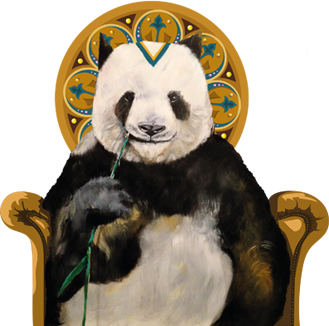

Prédicateurs d’Outils Pratiques
Nous restons sensibles à toutes les innovations pour vous proposer toujours plus d’outils qui vous faciliteront la vie !
Particulièrement Ouverts aux Projets
L’art et la communication font bon ménage et nous veillons à découvrir les artistes d’aujourd’hui pour nous en inspirer demain !
Peut-On s’en Passer ?
Essayez-nous, vous verrez, nos idées et nos solutions vous seront bientôt indispensables !
Il n’a qu’une idée en tête vous trouver des solutions digitales.
Ses points forts :
Expérience, Technique, Patience, Ergonomie
Ses passions :
Les cahiers des charges mais aussi la photo, le jazz
Elle adore se présenter comme journaliste, DA, graphiste et conceptrice. Le cumul des mandats, elle assume.
Ses points forts :
Imagination, coup de crayon, plume facile, bonne humeur
Ses passions :
Mettre de la couleur partout, et peindre, écrire, le patin à glace, le roller, le trampoline, la bande dessinée, le théâtre, lire, danser, sortir, le champagne, les expositions, apprendre, courir, le piano...